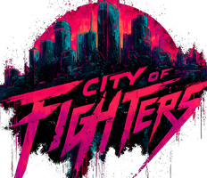

City of Fighters · StreamHow to connect to OBS (once, takes 2 minutes)
- In OBS, open the scene you stream with (the one with your game capture).
- Under Sources press + and choose Browser. Name it City of Fighters and press OK.
- In URL paste this link:
- Set Width 1920 and Height 1080. Leave Custom CSS as it is (it keeps the background see-through).
- Tick Refresh browser when scene becomes active, then press OK.
- In the Sources list, drag City of Fighters above your game capture so it sits on top. If it does not fill the screen, right-click it → Transform → Fit to screen.
- Done. Everything you Deploy below appears on stream within 2 seconds. If OBS ever looks stuck, right-click the source → Refresh.
Only this one source is needed: scoreboard, popups, bracket, standings, winner and podium all come through it. Nothing is shown to viewers until you deploy.
1 · Choose what to show
The podium shows up on OBS by itself when the tournament ends. Results of matches played off stream pop up over the scoreboard and bracket.
2 · Preview
Now on OBS
3 · OBS on this computer: cameras and Coming Up screen
This changes OBS directly. OBS must be open on this computer, with Tools → WebSocket Server Settings → Enable WebSocket server ticked. The password is under Show Connect Info in that window.
Not connected.
Cameras
Coming Up screen (between matches)
Uses the Coming Up artwork: the big window shows the game, the small windows show each player's camera. OBS switches to it when a match on stream ends and back when the next match goes on stream.